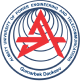

main
about
skills
Welcome!
My name is Adilbek.
I'm Frontend-developer.
Version: beta 0.1
main
about
skills
About
Education
Eurasian National University
2019-2020
Bachelor of Automation and Control - 1st year

Almaty University of Power Engineering and Telecommunications
2020-2023
Bachelor of Automation and Control - 2nd-4th years
Massachusetts institute of technology
2023-2025
Master of Computer Science
main
about
skills